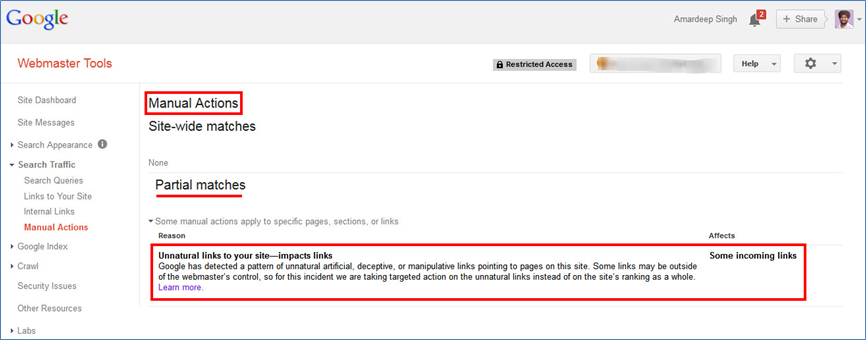

Penalty Recovery Service
Last 2 years Google rolled-out few significant improvements in their search ranking algorithm to serve better search experience to end
user and devaluing sites that violate Google webmaster guidelines. There have been few major updates names as Panda, EMD (exact match
domain), Penguin, and Algorithmic filter for Pay day loans (especially for UK).
FAQ
-
1. What is a link profile audit?
I’ll gather all the links to your website, using best available tools (Google Webmaster Tools, Ahrefs, Link Detox,
OSE). Next, I’ll manually analyze each link to identify problematic links that might flag you for a penalty.
-
2. How would you help me recover from this penalty?
Penguin is an algorithmic filter especially designed to detect sites with unnatural links (manipulative or spam links). The only
way to remove this penalty (either algorithmic or manual) is by identifying those problematic links and removing enough of these
unnatural links. And here I will help you manage all those unnatural links to your site and bring back you to Google’s good books.
Factors Responsible for a Penalty:
- Links: Sites with unnatural links became a Google target after their Penguin update. This algorithmic update was especially
designed to penalize sites for low-quality links, over-optimized anchor and other questionable techniques tactics that Google considers
unbeneficial to their users. Google web-spam team is even taking manual actions, where a member of the team manually delists the site
from the search results. This manual action could affect either your entire site performance or a specific portion on your site.

Penalty Recovery Strategy
Recovery strategy might be different depending upon on the type of Google penalty a site is struggling with. Below is a basic structure
designed to recovery from a penalty (either algorithmic or manual):
- Detailed back link audit using multiple tools.
- Conducting link removal outreach campaign to site owners and webmasters.
- Use of disavow tool to get rid of uncontrollable links (Links you have nothing to do with).
- Submitting reconsideration requests with complete details (Applied only with manual action)
- Creating (best is to earn) natural and high quality links to replace lost links.
Request Proposal